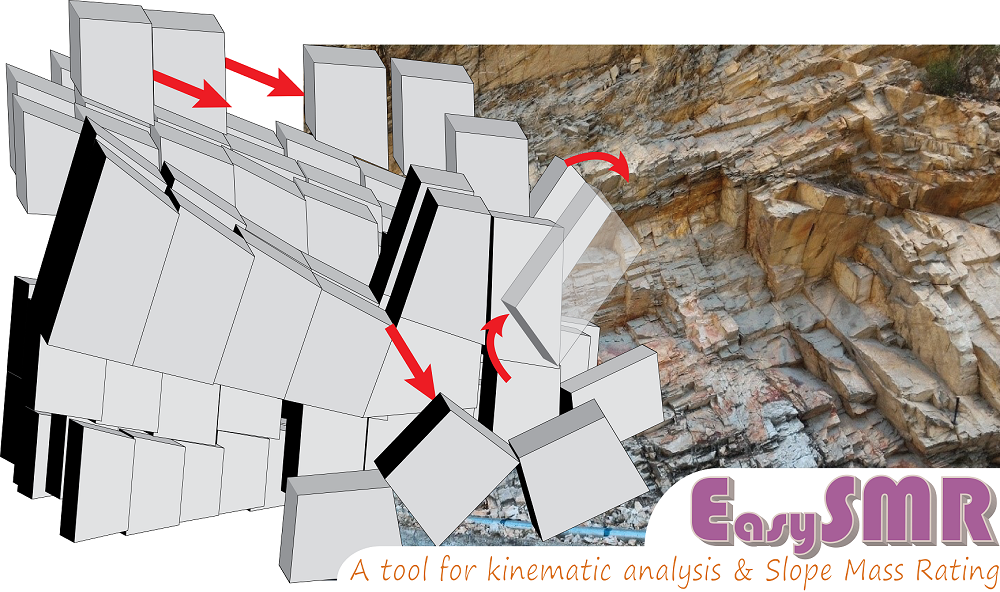

EasySMR: A tool for kinematic analysis and slope mass rating of rock slopes
EasySMR
'EasySMR' is a windows computer program and has been developed to
to ease the kinematic analysis and slope mass rating of rock slopes.
Kinematic analysis is a widely used method to assess stability condition in jointed rock slopes and predict the modes of block detachments.
However, consideration of kinematic failures as crisp values (e.g., 0 for failure otherwise 1)
in the conventional analysis is a limit to the susceptibility quantification.
EasySMR works on novel methods based on the adjustment factors of slope mass rating (SMR)
to quantify kinematic susceptibility of planar, wedge, and topple failure modes in terms of percentage/indices.
Manual calculation of SMR is tedious and time-consuming, particularly when a large number of joints are involved.
Hence, a method has been devised for the quantitative determination of both kinematic susceptibility and SMR with the help of EasySMR.
The application can incorporate a large number of joint data to provide convenient numeral,
graphical and pie-chart interpretation of the kinematic susceptibility and SMR results. The application has been written in Visual C#.
The program is freely available and is distributed under an open-source license
(GNU General Public License 3.0).
The software can be installed on a Windows Operating System preferably on Windows 7 or higher.
Other requirements:
-
.NET Framework 4.0
Microsoft Access Database Engine
Downloads
EasySMR is an open source licensed (GNU General Public License 3.0) software which can can currently run on Windows OS. The software is programmed in Visual Studio using c# language.
- Download the .exe file of the software here: EasySMR_win
- Go to the github page containing repository here: EasySMR_git_repository
Cite the software as:
Kundu, J., Sarkar, K., Verma, A.K., & Singh, T.N. (2020). EasySMR beta. A tool for kinematic analysis and slope mass rating. https://jkundu.com/easysmr (download date).
Cite the article for the methods used in the software as:
Kundu, J., Sarkar, K., Verma, A.K., & Singh, T.N. (Accepted for publication) Novel methods for quantitative analysis of kinematic stability and slope mass rating in jointed rock slopes with the aid of a new computer application. Bull Eng Geol Environ.
The below figure shows the EasySMR User Interface.

User Interface of EasySMR
Upon maximising the EasySMR window you should see like the below figure with frequency graph and pie chart.

User Interface of EasySMR maximized
Hope you enjoy using the software! I would love to receive your feedback at email@jkundu.com. Your comments/suggestions are valuable to make it more convenient and error free.